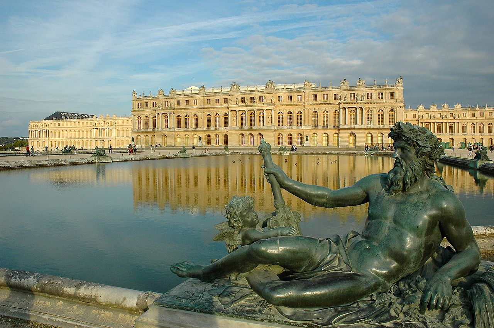
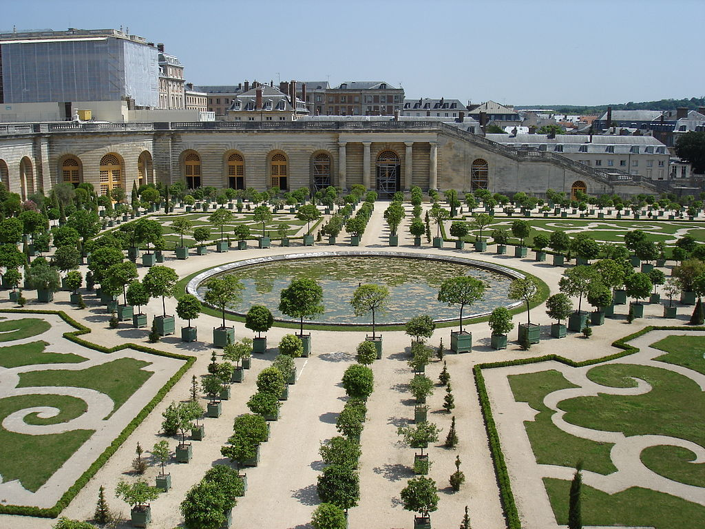

Cung điện Versailles (tiếng Pháp: Château de Versailles) là nơi ở của các vua (và hoàng hậu) Pháp Louis XIII, Louis XIV, Louis XV và Louis XVI. Nằm ở phía Tây của Paris tại thành phố Versailles, lâu đài Versailles là biểu tượng của quyền lực tối thượng của các triều đại phong kiến Pháp với một diện tích và các công trình kiến trúc cực kì đồ sộ và lộng lẫy. Với một cung điện rộng 67.000 mét vuông gồm trên 2000 phòng, một công viên có diện tích 815 héc ta, Versailles là một trong các lâu đài đẹp nhất và lớn nhất châu Âu cũng như trên thế giới. Năm 1979, lâu đài Versailles đã được UNESCO đưa vào danh sách Di sản thế giới.
Lâu đài Versailles là công trình ghi dấu những tinh hoa của nghệ thuật Pháp thế kỉ 17 và 18, kiến trúc của nó tuân theo những quy tắc chuẩn mực của chủ nghĩa cổ điển như tính đối xứng của công trình, các hành lang nhiều cột, các công trình nghệ thuật lấy cảm hứng từ truyền thuyết và nghệ thuật cổ đại. Xen vào sự chính xác này là một số nét nghệ thuật Baroque.
